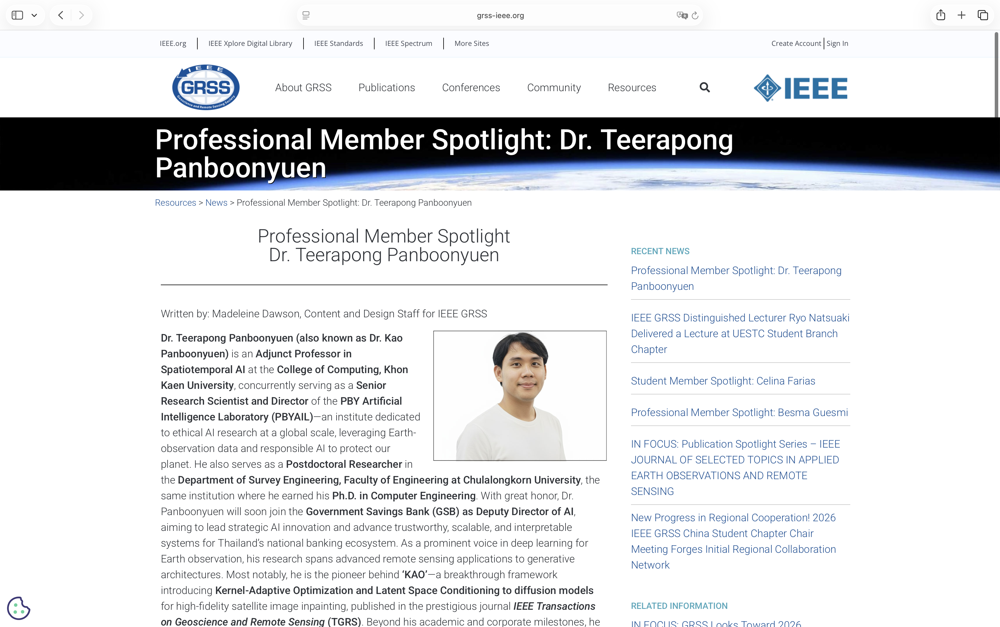
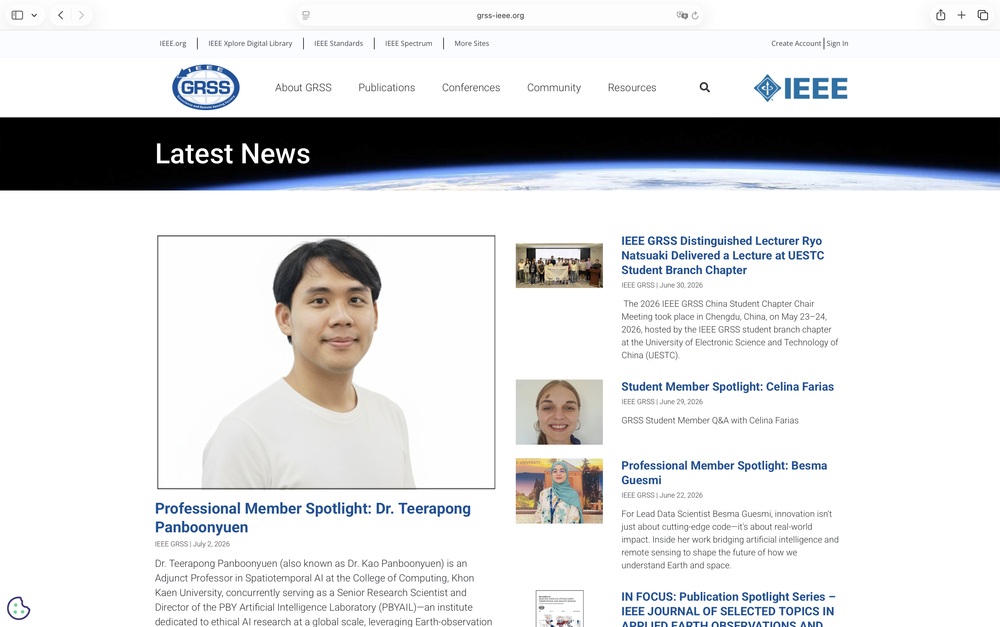
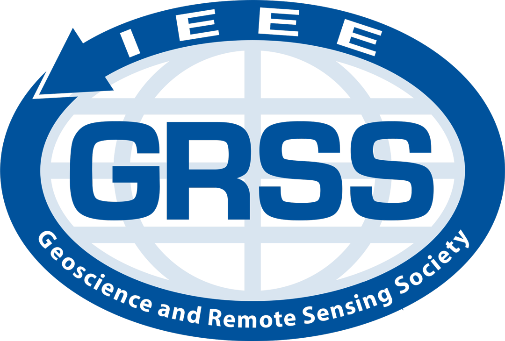

When the Earth Sees You Back: Being Featured by IEEE GRSS as a Professional Member Spotlight
A quiet milestone that reminded me why I fell in love with GeoAI, remote sensing, and building AI for understanding our planet.
 Featured as a Professional Member Spotlight by the IEEE Geoscience and Remote Sensing Society (IEEE GRSS).
Featured as a Professional Member Spotlight by the IEEE Geoscience and Remote Sensing Society (IEEE GRSS).
🛰️ I Got Into GeoAI to See the Earth More Clearly. Turns Out, It Saw Me Too.
“You don’t need a perfect trajectory. You just need to keep going, keep being curious, and find the people who believe in your work before you do.”
Some news arrives loudly. This one arrived quietly, in an email, and I’ve been sitting with it for a few days now, still slightly in disbelief.
I was recently named a Professional Member Spotlight by the IEEE Geoscience and Remote Sensing Society (GRSS) — the global academic society under IEEE dedicated to the research, development, and application of remote sensing technology for the Earth, the oceans, the atmosphere, and space, serving scientists and engineers around the world.
Being recognized by a society like this is not something I take lightly. GRSS is where the global remote sensing community lives. Having a small piece of my work, and my story, sit inside that space — I am still processing what that means.
You can read the full interview here: IEEE GRSS Professional Member Spotlight — Dr. Teerapong Panboonyuen
🎙️ A Conversation Worth Remembering
The spotlight came through a conversation with Madeleine Dawson from the Ocean Remote Sensing Lab, University of Miami. We talked about my recent work on KAO: Kernel-Adaptive Optimization, published in IEEE Transactions on Geoscience and Remote Sensing (TGRS) — but really, the conversation went well beyond the paper itself.
It was the kind of exchange that reminds you why you chose this field in the first place. Not just the equations, the benchmarks, or the leaderboard numbers — but the people who care about the same quiet, unglamorous question: how do we build tools that help us understand this planet a little better?
And since a fair number of people who reached out after the spotlight asked, quite fairly, “okay but what actually is KAO?” — I figured the honest way to answer that is to just show you. Grab a coffee. This part gets nerdy. ☕🛰️

Figure 1: The IEEE Geoscience and Remote Sensing Society (IEEE GRSS) Latest News page highlighting my feature as a Professional Member Spotlight.
Seeing my work appear on the official homepage of one of the world's leading scientific societies in remote sensing was an unforgettable moment.
It represents not only a personal milestone but also a meaningful recognition of the growing contributions of Thai researchers to the global GeoAI and Earth observation community.
Credit: IEEE Geoscience and Remote Sensing Society (IEEE GRSS).
Official Article:
https://www.grss-ieee.org/resources/news/professional-member-spotlight-dr-teerapong-panboonyuen/
🌱 Where It Actually Started
Before the math, the origin story, because it matters.
My journey in GeoAI started at GISTDA — the Geo-Informatics and Space Technology Development Agency of Thailand. It was my first real school in geoscience, and it’s a place I still carry with me. GISTDA gave me the foundation to believe that satellite imagery could be something more than pixels and data — it could be a lens for understanding the world more clearly. That belief still shows up in every line of code I write.
From there, I found a second home at Chulalongkorn University, under my postdoctoral advisor, Professor Chalermchon, who trusted me with the space to explore and create independently. The C2F (The Second Century Fund, Chulalongkorn University) postdoctoral support made much of this work possible.
And I owe real gratitude to the College of Computing at Khon Kaen University, for their warmth, and for letting me be part of shaping the next generation of AI researchers here in Thailand.
None of this happened alone. Recognition like this always belongs to more people than the name on the article.
Small news folded in: KAO has also been accepted at AOGS 2026 in Fukuoka, Japan. Quietly one of the things I’m most looking forward to this year.

Figure 2: The official Professional Member Spotlight article published by IEEE GRSS.
The interview reflects my research journey—from discovering remote sensing at GISTDA to developing Kernel-Adaptive Optimization (KAO) for Earth observation and AI.
I am deeply grateful to IEEE GRSS and interviewer Madeleine Dawson for providing the opportunity to share my story with the international remote sensing community.
Credit: IEEE Geoscience and Remote Sensing Society (IEEE GRSS).
Official Article:
https://www.grss-ieee.org/resources/news/professional-member-spotlight-dr-teerapong-panboonyuen/
🧩 Okay, So What Problem Is KAO Actually Solving?
Picture a very high-resolution (VHR) satellite image — 50 cm per pixel, sharp enough to make out individual rooftops and cars. Now picture a chunk of it missing. Clouds drifted through during acquisition. A sensor glitched. Someone’s occlusion mask covers a whole neighborhood.
Satellite image inpainting is the task of filling that hole back in — not with a plausible-looking blur, but with something structurally correct: roads that connect properly, fields that follow real irrigation lines, coastlines that don’t hallucinate a pier that was never there.
Diffusion models are the best tool we have for this. But they come in two flavors, and both have a catch:
- Preconditioned models — inpainting is baked in during training. Fast at inference, but you need to retrain the whole thing every time you touch a new dataset.
- Postconditioned models — inpainting is bolted on at inference time, no retraining needed. Flexible, but painfully slow, because you’re running the diffusion process forward and backward, over and over, just to patch one hole.
KAO is our attempt to get the best of both: the speed of preconditioning, the flexibility of postconditioning — without either the retraining tax or the compute tax.
🌀 A 60-Second Refresher on Diffusion Models
If you already live and breathe DDPMs, skip ahead. If not, here’s the shape of the idea, distilled.
A diffusion model learns to destroy an image with noise, step by step, and then learns to walk that process backward.
1.1 The Forward Process
Let $x_0$ be a clean satellite image. The forward process corrupts it over $T$ timesteps until it becomes pure Gaussian noise, following a Markov chain:
$$ q(x_{1:T} \mid x_0) = \prod_{t=1}^{T} q(x_t \mid x_{t-1}) $$
where each individual transition adds a small amount of noise, controlled by a schedule $\alpha_t \in (0,1)$:
$$ q(x_t \mid x_{t-1}) = \mathcal{N}\bigl(x_t;\ \sqrt{\alpha_t}, x_{t-1},\ (1-\alpha_t)\mathbf{I}\bigr) $$
Reading the schedule. As $\alpha_t \to 1$, almost no noise is added at step $t$; as $\alpha_t \to 0$, the signal is nearly wiped out. Over $T \approx 1000$ steps, this drip-feed of noise is what lets the reverse process learn a smooth denoising trajectory instead of a single, brutal leap from noise to image.
1.2 The Reverse Process
A neural network $p_\theta$ learns to invert this corruption, one step at a time, starting from pure noise:
$$ p(x_{0:T}) = p(x_T) \prod_{t=1}^{T} p_\theta(x_{t-1} \mid x_t), \qquad p(x_T) = \mathcal{N}(x_T;\ 0,\ \mathbf{I}) $$
Training minimizes the KL divergence between the true posterior $q(x_{t-1}\mid x_t, x_0)$ and the model’s prediction $p_\theta(x_{t-1}\mid x_t)$:
$$ \theta^{*} = \arg\min_{\theta}\ D_{\mathrm{KL}}\bigl[q(x_{t-1}\mid x_t, x_0)\ \Vert\ p_\theta(x_{t-1}\mid x_t)\bigr] = \arg\min_{\theta}\ \frac{1}{2\sigma_q^2(t)}\bigl\Vert \mu_\theta - \mu_q \bigr\Vert^2 $$
which, after taking the expectation over randomly sampled timesteps $t \sim \mathcal{U}{2,T}$, gives the standard diffusion training objective. For inpainting, this reverse process is conditioned on the known pixels while the model dreams up the missing ones — and that hand-off is exactly where KAO steps in.
⚙️ The Core Idea: Kernel-Adaptive Optimization
Standard diffusion training treats every pixel, every region, every timestep with the same gradient weighting. But satellite images aren’t uniform. A stretch of open ocean and a dense city block do not deserve equal attention during denoising — one is nearly flat, the other is packed with structure that’s easy to destroy and hard to rebuild.
KAO’s fix: weight the training signal by a kernel that measures how “eventful” a region is, so the model spends its learning capacity where it actually matters.
2.1 Diffusion as a Stochastic Differential Equation
We treat the forward diffusion process as a stochastic differential equation (SDE):
$$ dX_t = f(X_t, t), dt + g(t), dW_t $$
where $f(X_t,t)$ is the drift term ensuring smooth transitions, $g(t)$ is a time-dependent diffusion coefficient, and $W_t$ is a Wiener process. The reverse process recovers $X_0$ from $X_T$ using a learned score function $s_\theta(X_t, t)$:
$$ dX_t = \bigl[f(X_t,t) - g(t)^2, s_\theta(X_t,t)\bigr], dt + g(t), d\bar{W}_t $$
2.2 The Kernelized Objective
Kernel-Aware Optimization (KAO) modifies the standard training process by applying a similarity-based weighting to the KL divergence loss. Instead of treating every training sample equally, KAO assigns greater importance to transitions between consecutive latent states that are more similar according to a kernel function, while giving less emphasis to less similar transitions.
This allows the model to focus its learning on preserving locally consistent latent representations, leading to smoother and more coherent denoising behavior during training.
The kernel itself is a Gaussian radial basis function (RBF) over the latent distance between consecutive states:
$$ K(X_t, X_{t-1}) = \exp\left(-\frac{\Vert X_t - X_{t-1} \Vert^2}{2\sigma^2}\right) $$
Bandwidth analysis. $\sigma$ is an adaptive bandwidth, not a fixed hyperparameter — it stretches or shrinks with local image complexity. For a flat, low-variance patch (open ocean, uniform cropland), $\Vert X_t - X_{t-1}\Vert$ stays small across timesteps, so $K \to 1$ and the sample contributes close to its unweighted gradient. For a high-frequency patch (a coastline, a road intersection), consecutive latent states diverge more sharply under noise, $K$ decays toward $0$, and the loss weighting compensates upward relative to flat regions — concentrating gradient signal exactly where structure is easiest to destroy and hardest to reconstruct.
2.3 Defining “Eventful”: High Structural Variance (HSV)
To decide which regions deserve that extra attention, we define a per-pixel High Structural Variance (HSV) score:
$$ \mathrm{HSV}(x) = \mathrm{Var}_{\mathcal{N}(x)}\bigl[\nabla I\bigr] - \epsilon $$
where $\nabla I$ is the local image-gradient magnitude within neighborhood $\mathcal{N}(x)$, and $\epsilon$ is a learned noise-suppression threshold. Positive $\mathrm{HSV}(x)$ marks structurally rich content — road edges, coastlines, field boundaries — and KAO prioritizes these regions during denoising; near-zero or negative $\mathrm{HSV}(x)$ marks flat, low-information content, which the model can safely under-weight.
2.4 Why This Is Principled, Not Just a Heuristic
This kernelized reweighting mirrors the Fisher-Rao metric from information geometry: gradients are reweighted to reduce variance in regions of high uncertainty, steering parameter updates toward the locally Wasserstein-optimal direction rather than treating every region of the image as equally informative:
$$ \nabla_\theta, \mathbb{E}\Bigl[\bigl\Vert s_\theta(X_t,t) - \nabla \log p(X_t)\bigr\Vert^2\Bigr] \ \propto\ \mathbb{E}\Bigl[K(X_t, X_{t-1})\cdot \nabla_\theta \log p_\theta(X_t)\Bigr] $$
Nerdy, yes. But the payoff is concrete: sharper roads, cleaner field boundaries, fewer hallucinated textures where the model “gave up” and smoothed things over.
🧵 Two Mechanisms That Make It Work: Latent Conditioning + Explicit Propagation
Kernel weighting alone isn’t enough — KAO also needs a way to actually inject the known pixels into the generation process for the unknown ones. That’s done through two coordinated mechanisms.
3.1 Latent Space Conditioning (LSC)
At every resolution level of the network, we blend the “inferred” latent features $h^{\text{infr}}$ with the “conditioned” (known) features $h^{\text{cond}}$, guided by a downsampled version of the occlusion mask $D(m)$:
$$ h^{*} = h^{\text{infr}} \odot \bigl(1 - D(m)\bigr) ;+; h^{\text{cond}} \odot D(m) $$
Why average pooling for $D(m)$. Because $D(m)$ is produced by resizing the binary mask $m$ via average pooling rather than nearest-neighbor downsampling, it is no longer strictly binary near occlusion boundaries — it becomes a soft blending coefficient. This is what prevents hard, visible seams at the edge of a reconstructed region.
3.2 Explicit Propagation (EP)
Latent conditioning alone tells the model where to blend; Explicit Propagation is what actually lets information flow from known regions into missing ones inside the latent space, via a learned nonlinear transform $\phi$ with parameters $\omega$:
$$ \hat{h} = \gamma^{-1}\Bigl[,\phi\bigl(\omega,;\ \gamma(D(m),, h^{\text{cond}})\bigr)\Bigr] $$
Here $\gamma$ is a mask-wise max-pooling operation that compresses the conditioned region’s information, $\phi$ is a small learned nonlinearity that maps $\phi:\mathbb{R}^{C}\to\mathbb{R}^{C\times 1 \times 24}$, and $\gamma^{-1}$ is the corresponding unpooling operation that restores the result to full resolution.
Parameter cost. This entire module adds fewer than $1%$ additional parameters relative to the base diffusion backbone — a strikingly cheap add-on for the quality gain it produces, since it never touches the pretrained weights of the underlying denoiser.
3.3 Final Reconstruction
At each denoising step, the inferred and conditioned predictions are blended one last time using the original (full-resolution) mask $m$:
$$ x_{t-1} = x_{t-1}^{\text{infr}} \odot (1-m) ;+; x_{t-1}^{\text{cond}} \odot m $$
Run this recursively for $t = T, T-1, \dots, 1$, and the output at $t=0$ is the fully reconstructed satellite image — occlusion filled in, structure intact.
🌐 Why a Token Pyramid Transformer (TPT), Specifically
KAO’s backbone uses a Token Pyramid Transformer (TPT) instead of a more familiar U-Net or HRNet. The reasoning, briefly:
- U-Net relies on repeated downsampling/upsampling, which tends to blur token-level detail across scales.
- HRNet keeps high resolution throughout, which preserves detail — but at a steep computational cost for VHR imagery.
- TPT keeps token-level granularity without the downsample/upsample cycle, and stays lighter than HRNet, while still capturing hierarchical semantics.
Critically, TPT’s token-level representations give KAO’s kernel weighting something clean to grab onto — each token becomes a natural unit for the kernel to weight, rather than an entire feature map.
📊 Does It Actually Work? (Yes — Here’s the Receipts)
KAO was tested on two very-high-resolution benchmarks: the Massachusetts Roads Dataset (thin, sharp linear structures) and DeepGlobe 2018 (diverse land cover at 50 cm/pixel), against Stable Diffusion, RePaint, LatentPaint, SatDiff, DPS, and PSLD.
| Dataset | Metric | KAO (Ours) | Best Baseline |
|---|---|---|---|
| Massachusetts Roads | FID ↓ | 3.11 | 3.42 (PSLD) |
| Massachusetts Roads | Precision ↑ | 0.93 | 0.91 (PSLD) |
| Massachusetts Roads | Recall ↑ | 0.91 | 0.89 (PSLD) |
| DeepGlobe 2018 | FID ↓ | 1.42 | 1.65 (PSLD) |
| DeepGlobe 2018 | Precision ↑ | 0.88 | 0.84 (PSLD) |
| DeepGlobe 2018 | Recall ↑ | 0.63 | 0.58 (PSLD) |
And it’s not just more accurate — it’s lighter. On Massachusetts Roads, KAO runs inference in 0.67s per image on 8.7 GB of GPU memory with 10.9 billion FLOPs, all of them the lowest among every method tested. Better reconstructions, smaller footprint. That combination is rare enough that it’s genuinely satisfying to see in the numbers.
The ablation study tells the same story from a different angle — strip out resampling, and LPIPS falls apart (0.528); add latent conditioning back, and it drops to 0.297; add the propagation modules, and the full model lands at 0.059 LPIPS, 6.13 FID. Every component earns its place.
🌾 Where It Actually Shows Up: Farmland, Not Just Formulas
The equations are fun, but the part that actually made the Madeleine Dawson conversation feel real was talking about where this matters. In agricultural regions — crop rows, irrigation channels, segmented plots — KAO consistently recovers boundary alignment and furrow direction that other methods blur into mush. In urban scenes, it holds road networks and rooftops together instead of letting them melt into their surroundings.
That’s the actual point of all this kernel machinery: not a leaderboard number, but a downstream researcher somewhere being able to trust that a reconstructed satellite tile reflects the real geometry of a real place — for crop monitoring, disaster response, land-use mapping, the unglamorous infrastructure work that remote sensing quietly makes possible.

Figure 3: The official logo of the IEEE Geoscience and Remote Sensing Society (IEEE GRSS),
one of the world's premier professional societies dedicated to advancing the science and engineering of remote sensing, Earth observation, geospatial artificial intelligence, and environmental monitoring.
Being recognized by IEEE GRSS is an honor that reminds me how far curiosity, perseverance, and collaboration can carry a researcher—from local beginnings to a truly global scientific community.
Credit: IEEE Geoscience and Remote Sensing Society (IEEE GRSS).
Official Website:
https://www.grss-ieee.org/
🕊️ Why This Matters Beyond Me
If this interview reaches anyone — especially someone early in their path in GeoAI or remote sensing here in Thailand — I hope it says this clearly: you don’t need a perfect trajectory to get somewhere meaningful. You need curiosity, persistence, and people who believe in your work before you fully believe in it yourself.
Looking back, this spotlight is not just a milestone; it is proof that the late nights spent debugging gradients, retraining diffusion backbones, and obsessing over structural variance actually meant something. In this field, it is easy to get lost in the abstraction of datasets and metrics. But when an institution as prestigious as the IEEE Geoscience and Remote Sensing Society looks at your work and says, “We see what you are doing, and it matters,” the entire journey falls into place. This recognition is the global remote sensing community’s validation of a simple truth: that meticulous, uncompromising research can bridge the gap between AI and the physical world. I got into this field to see the Earth more clearly. To realize that the Earth-observation community is now looking back—not just at the code, but at the dedication behind it—is a profound reminder of why we push boundaries. We don’t just process satellite tiles; we decode the pulse of our planet. And for that mission, I am all in.
I got into this field to see the Earth more clearly. I didn’t expect, one day, for the Earth-observation community to look back.
For the Earth, always. 🕊️
Full interview: IEEE GRSS Professional Member Spotlight — Dr. Teerapong Panboonyuen
KAO project page: kaopanboonyuen.github.io/KAO
Citation
Panboonyuen, Teerapong. (July 2026). When the Earth Sees You Back: Being Featured by IEEE GRSS as a Professional Member Spotlight. Blog post on Kao Panboonyuen.
https://kaopanboonyuen.github.io/blog/2026-07-02-ieee-grss-professional-member-spotlight/
For a BibTeX citation:
@article{panboonyuen2026ieeegrssspotlight,
title = "When the Earth Sees You Back: Being Featured by IEEE GRSS as a Professional Member Spotlight",
author = "Panboonyuen, Teerapong",
journal = "kaopanboonyuen.github.io/",
year = "2026",
month = "July",
day = "2",
url = "https://kaopanboonyuen.github.io/blog/2026-07-03-ieee-grss-professional-member-spotlight/"
}
Thank you for reading this reflection on my journey in GeoAI, remote sensing, and the incredible honor of being featured as a Professional Member Spotlight by the IEEE Geoscience and Remote Sensing Society (IEEE GRSS). 🌍🛰️🤖
This recognition is far more than a personal milestone. It represents the collective support of mentors, collaborators, students, friends, and institutions that have shaped my journey—from my first steps in geospatial science at GISTDA, through my postdoctoral research at Chulalongkorn University, to my current academic home at the College of Computing, Khon Kaen University.
I sincerely hope this story encourages more young researchers—especially those from Thailand and Southeast Asia—to believe that impactful research can emerge from anywhere. Curiosity has no borders, and neither should scientific discovery.
Finally, my heartfelt gratitude goes to IEEE GRSS, Madeleine Dawson, and everyone involved in making this interview possible. It is a privilege to contribute, in my own small way, to a global community dedicated to understanding our planet through Earth observation, remote sensing, and artificial intelligence.
For the Earth, always. 🌏🕊️
Teerapong Panboonyuen
My research focuses on leveraging advanced machine intelligence techniques, specifically computer vision, to enhance semantic understanding, learning representations, visual recognition, and geospatial data interpretation.